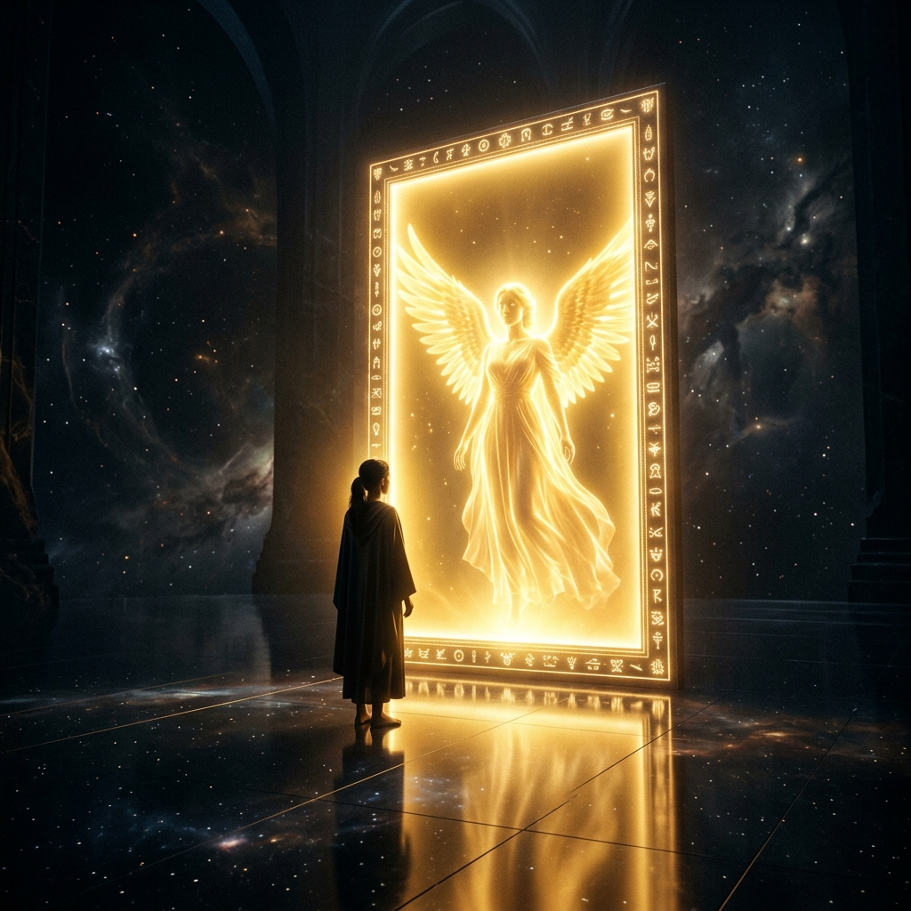

When God Put Me in a Room with Myself
THE SEASON OF
DISCOVERY
Connecting The Deep Internal Dots
Your life is not random. It moves through seasons. The Season of Discovery comes to make you hungry enough to go find the answers. It reveals two things: Who God actually is. And who you actually are.
⏳ The Seasonal Architecture
"The fundamental tragedy is experiencing a season of isolation and calling it depression, or experiencing closed doors and calling it an attack... when God is repositioning you."
Not every difficult period is a divinely structured season. But often, the instinct to isolate—to step back from surface-level participation—is the grace required to enter a season that demands your full attention.
This season does not come to give you answers easily. It comes to make you desperate enough to go find them.
THE DISCOVERY
It is not primarily about finding information. It is primarily about finding yourself.
🗺 The Architecture of Formation
Click or tap any node to reveal the deep insight behind it.
WHAT CONSTRUCTS YOUR MINDSET
WHAT CLOSES THE GAP
🧩 The Difference in The Data
THE DANGEROUS CONFUSION
Most people treat knowledge, understanding, and wisdom as the same thing.
Knowledge is accumulation of facts. It cannot change your life by itself. Understanding sees the "why" behind what you know. But Wisdom is the ability to take what you know and apply it to get actual results. Wisdom is defined by motion.
THE DANGER OF STRONGHOLDS
Invisible Architecture
A stronghold is not just a bad habit. It is a fortified belief system that presents itself as reality. The poverty mindset is a stronghold—it interprets everything through scarcity. The victim mindset is a stronghold—it frames your life as something happening *to* you. You cannot dismantle what you will not name.
📡 The Paradigm Audit — Activation Lab
Select the 4 markers of a changing season to evaluate if you are in transition.
Select a Marker
Explore the profound parameters of seasonal transition.
🔓 The Transformation Audit
The Season of Discovery builds 9 specific shifts in perspective. Check the ones you have secured.
Personal Responsibility
My life is not happening to me. It is happening from me.
Decisional Edge
Nothing moves without real, costly decisions backed by the willingness to pay the price.
Perspective on Pressure
Resistance is not abandonment; it is evidence that I am in motion.
Priority of Transformation
Who I am becoming is infinitely more important than what I am accumulating.
🪞 The Identity Reflection
Identity is not a static original buried under layers. It is both revealed and formed.
The Season of Discovery is when God takes you seriously enough to put you in a room with yourself. The question goes beyond 'what do I achieve?' to 'who am I, really, and what did God put me here to do?'
🔥 The Closing Declaration
THE SEASONAL SURRENDER
"I will not medicate my hunger with distraction. I embrace the Season of Discovery. I give myself permission to dismantle borrowed identity and step into the architecture of my true divine design. I choose wisdom over information."